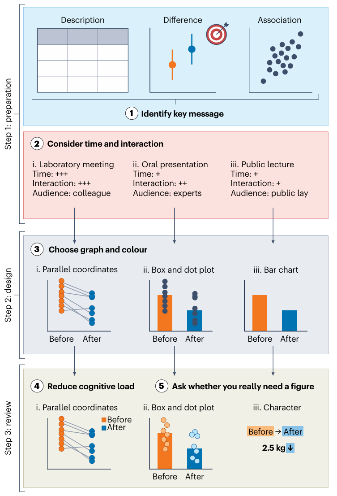
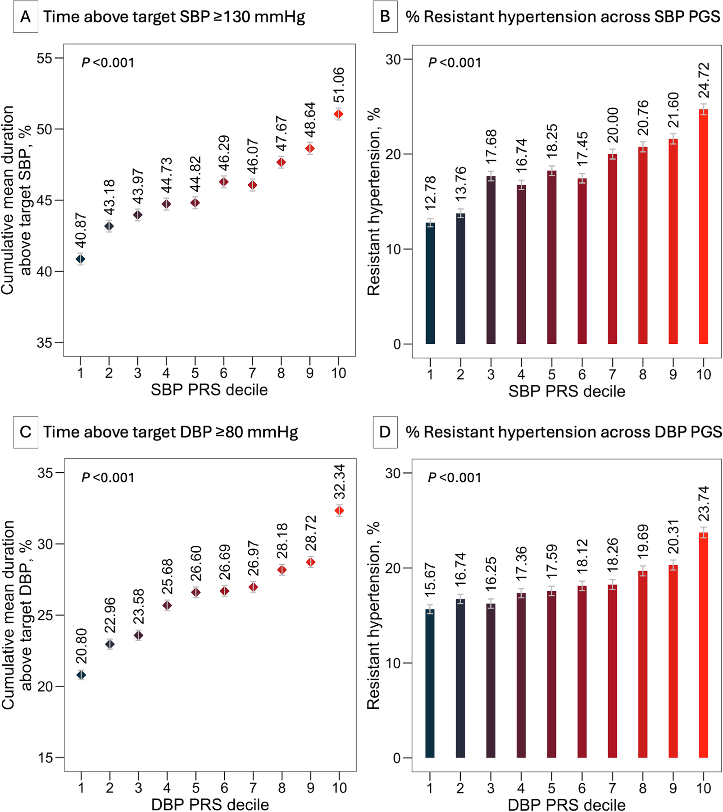
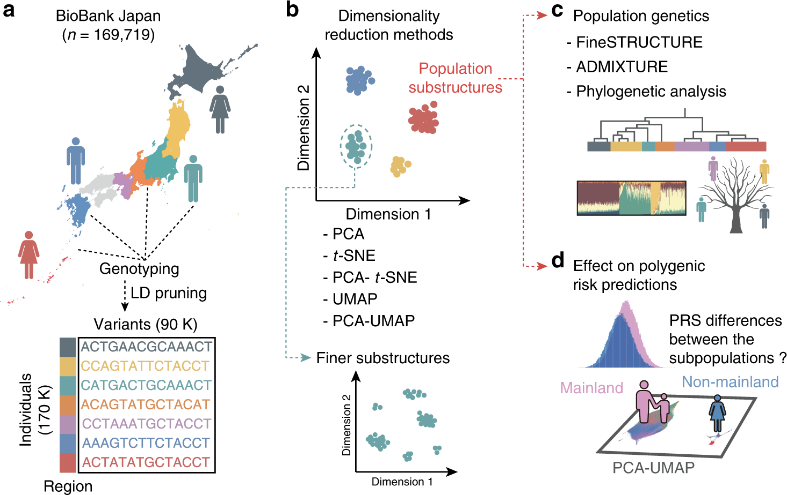
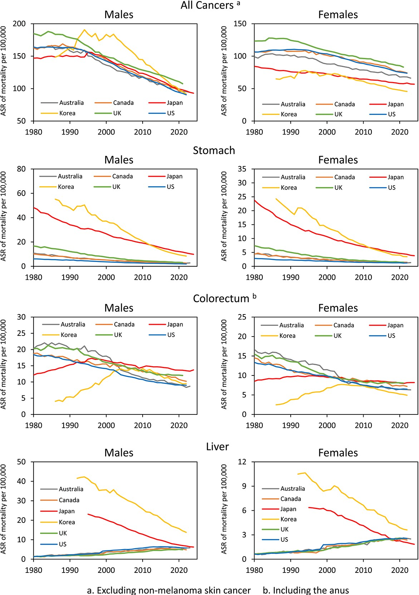

从交流的视角设计图片

1 确定关键信息
- 有效的图片应该要强调读者首要关注的结果
- 不要展示所有的结果
- 展示支持研究结果的模式（pattern）、比较（comparison）或关系（relationship）
- 考虑受众
- 选择合适的图形类型、细节层次和视觉重点
2 考虑时间和互动
- 考虑场合，会影响时长和互动情况
- 组会（Laboratory meeting）
- 类似背景、高水平长时间的讨论
- 图片应该包含方法细节或原始数据，用于解释复杂内容
- 海报展示（Poster presentation）
- 有充足时间进行交流解释
- 图片要简单可解释
- 口头报告（oral presentation）或公开演讲（public lecture）
- 时间有限、交流限制
- 图片传达简单、可快速理解的信息
- 直接标注关键值、趋势、显著性，让读者无需在坐标轴或标题之间来回参考（图 2 ）

- 研究论文（Research article）
- 非实时交流，但读者可以根据自己的节奏反复查阅
- 在保证结构清晰和可解释的前提了，尽可能提供更多细节
- 在线平台（Online platform）
- 读者根据自己节奏阅读，同时可以展示更多互动信息
- 分层或渐进地展示复杂的数据集
- 没有时间和互动时，展示更简单的信息；有时间和互动时，展示更多细节
3 选择正确的图形和颜色
- 点或抖动图（dot or jitter plots）辅助条形图展示数据分布（云雨图、小提琴图等）
- 置信区间辅助点估计展示
- 分类色阶用于区分不同组别(图 3 )、顺序色阶表示数值大小的递进、发散色阶则突出相对于某个参考点的偏离
- 色盲友好颜色或与纹理等一起展示

4 减少认知负荷
- 强调重要的，简化次要的
- 提高数据墨水比（data-to-ink ratio）
- 不必要的网格线、装饰性背景和冗余的图形元素可以去除而不影响解读
- 衍生为信噪比
- 提高数据墨水比（data-to-ink ratio）
- 限制图表中使用的颜色和分组数量
- 使用一套数量少且一致的色彩和分组（图 5 ）
- 更详细结果可放在补充材料或其他地方
- 直接标注
- 将标签直接放在折线或分组的旁边，不需要在图形和图例之间来回看

5 是否真的需要图片
- 表格更适合报告详细的数值或描述性特征
- 政府统计数据、被试的基线特征、模型估计值列表、精确的数值比较
- 分布、相关性、时间趋势和复杂的比较更适合图片展示
- 图片和表格需要相辅相成
参考文献
Fujii, R. (2026). How to design effective scientific figures. Nature Human Behaviour, 10(5), 825–827. https://doi.org/10.1038/s41562-026-02466-9